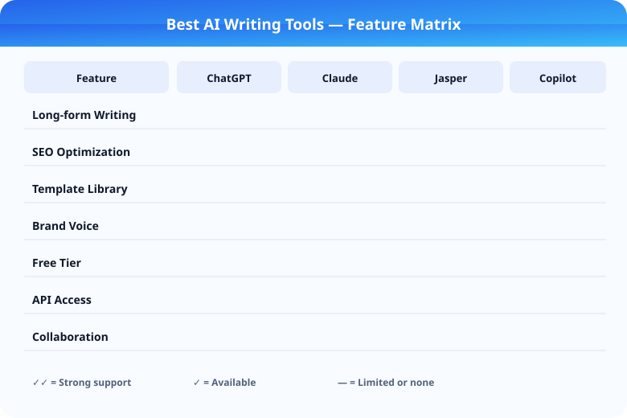

Best AI Writing Tools in 2026: Complete Guide

AI writing tools have matured past novelty, but the category is still crowded with products that look similar on landing pages and behave very differently in real use. The strongest tools reduce blank-page friction, tighten editing loops, and help teams produce more consistent work. The weakest ones create a layer of cleanup that cancels the time they appear to save.
This guide is built for buyers who want more than a feature checklist. Instead of asking which tool has the longest prompt library, the more useful question is which tool fits your workflow once you have deadlines, revisions, brand constraints, and multiple formats to deliver. A solo blogger, a content agency, and an in-house marketing team can all use AI writing software, but they rarely need the same product.
| Tool | Free Tier | Paid Plan | Best For |
|---|---|---|---|
| ChatGPT | Yes (GPT-4o limited) | $20/month Plus | General use |
| Claude | Yes (limited) | $20/month Pro | Long documents |
| Jasper | No | $39/month Creator | Marketing copy |
| Grammarly | Yes (basic) | $12/month Premium | Editing |
Key Takeaways
- ChatGPT is the best all-around choice for versatility across writing tasks (Rating: 9/10)
- Claude excels at long-form refinement and document-aware editing (Rating: 8.5/10)
- Jasper is strongest for teams needing templates and brand consistency (Rating: 8/10)
- Choose based on your bottleneck: speed, consistency, or revision quality
How to pick an AI writing tool
The first mistake most buyers make is comparing products as if they all solve the same problem. Some AI writing tools are best used as first-draft accelerators. Others are better at rewriting, summarizing, or generating structured content inside an existing workflow. If you do not define the job first, almost every tool will sound impressive for five minutes and disappointing by the second week.
Start with four filters. First, evaluate output quality: does the tool produce coherent copy that sounds close to your intended tone? Second, evaluate controllability: can you guide the structure, voice, and level of detail without fighting the interface? Third, evaluate workflow fit: does the product integrate with how you actually publish, collaborate, and review? Fourth, evaluate pricing pressure: is the useful version on the free or entry tier, or does value only appear after you upgrade?
For SEO publishers and affiliate sites, the editing layer matters more than the drafting layer. You need tools that can move from rough notes to structured sections, rewrite without flattening intent, and help maintain consistency across posts. For agencies, collaboration and reusable frameworks matter more. For solo creators, speed and simplicity usually win.
Best overall AI writing tools
ChatGPT for flexibility
ChatGPT remains one of the most flexible writing environments because it adapts well to many different tasks. It can brainstorm angles, rewrite sections, condense rough research, and help create stronger outlines with relatively little setup. The main advantage is range. If your writing needs change every day, a general-purpose assistant often beats a narrow content generator.
The tradeoff is that flexibility requires direction. Users who want a guided writing workflow may find the blank interface demanding. If you already know how to structure prompts and iterate on tone, ChatGPT is hard to beat. If you want a more templated environment, it may feel less efficient than specialized tools.
Jasper for teams and workflows
Jasper is still one of the more polished options for teams that need process, templates, and brand-oriented writing support. It works best when content production involves multiple stakeholders, standard content formats, and a clear style guide. Rather than acting as a pure blank-slate assistant, Jasper tries to package repeatable workflows so teams can move faster with less prompt experimentation.
Its downside is cost. Smaller creators may find it harder to justify if they only need occasional drafting help. The product makes more sense when the time saved is distributed across a team or across many content assets each month.
Claude for long-form refinement
Claude stands out when you need an assistant that can handle long documents, preserve nuance, and respond thoughtfully to editorial instructions. It is especially useful in the revision stage, where a writer already has source material and wants help restructuring, clarifying, or compressing it without losing the original meaning.
For people writing essays, reports, guides, or detailed briefs, Claude often feels calmer and more coherent than more aggressive drafting tools. It is less about rapid-volume content generation and more about quality-preserving transformation.
Best AI writing tools by use case
Best for bloggers and affiliate publishers
Bloggers need a tool that can move fluidly between keyword-informed outlines, draft expansion, intro rewrites, comparison sections, and quick fact organization. In this environment, a versatile assistant like ChatGPT often performs better than rigid content generators because the work is rarely linear. You may outline in one pass, rewrite in another, and only then expand into a publishable draft.
Writers in this segment should favor tools that support iterative prompting over one-click article generation. One-click outputs are usually too generic to rank well or convert readers. The better workflow is outline first, body section second, refinement third, and manual fact-checking last.
Best for in-house teams
In-house teams often benefit from platforms that support brand voice, role-based workflows, and repeatable templates. Jasper and similar products are attractive here because they reduce variance. Marketing teams want faster approvals and fewer off-brand drafts. A tool that is slightly less flexible but more consistent can be a better business decision.
Best for long-form and research-heavy writing
If your content relies on supplied documents, interview notes, or dense background material, Claude is usually a strong fit. It tends to handle long-context editing well and can produce more measured rewrites when the goal is not speed but clarity. Researchers, analysts, and editorial teams producing comprehensive guides should test it early.
Best for fast social and campaign copy
When the main requirement is speed across short formats such as ad copy, emails, product descriptions, or social variants, specialized marketing-oriented tools can still earn their place. Their advantage is not raw model intelligence. It is workflow packaging. If the interface gets you from brief to usable variations faster than a chat assistant, the specialization has value.
| Tool | Free Tier | Paid Plan | Best For |
|---|---|---|---|
| Jasper | ✗ | $49/month | Marketing copy & brand control |
| Copy.ai | ✓ (2,000 words) | $36/month | Quick copywriting |
| Writesonic | ✓ (10,000 words) | $19/month | Budget-friendly writing |
| Rytr | ✓ (10,000 chars) | $9/month | Low-cost drafting |
| ChatGPT | ✓ | $20/month | Versatile AI writing |
| Claude | ✓ | $20/month | Long-form quality |
Pricing and value considerations
Pricing in this category can be misleading because many tools offer free access that is only useful for evaluation, not production. Buyers should test how quickly usage limits appear, whether key features are locked, and how many manual revisions are needed before output is publishable. A cheaper tool that produces weak copy can cost more in editing time than a more expensive but better controlled assistant.
Value also depends on how much the product reduces mental overhead. A tool that drafts 80 percent of a blog post but creates 20 percent of unnecessary cleanup may still be worth it if it saves you hours every week. On the other hand, if every output sounds bland, repetitive, or factually unstable, you are paying to manage new problems.
Before committing, run the same task across two or three candidates. Test a blog intro, a product comparison paragraph, a set of headline variants, and a rewrite of an existing section. You will learn more from that exercise than from ten pricing pages.
Final verdict
The best AI writing tool in 2026 is not a universal winner. It depends on whether you value flexibility, workflow structure, or long-form editorial quality. ChatGPT is the best all-around choice for users who want one tool to cover many writing tasks. Jasper remains strong for teams that want templates, processes, and brand control. Claude is an excellent option for long-form refinement and thoughtful rewriting.
If you are choosing one tool for a new content operation, start with the assistant that best matches your real bottleneck. If blank-page speed is the issue, prioritize flexibility. If consistency across multiple contributors is the issue, prioritize workflow and brand guardrails. If revision quality is the issue, prioritize long-context editing. That framing will help you buy more intelligently than any generic "top 10" list.
Related Articles